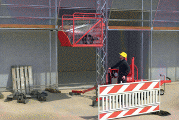

Gefahrstellen, bei denen Gegenstände unkontrolliert abrutschen
oder herabfallen können, sind abzusperren und zu kennzeichnen.
Die Kennzeichnung an Baustellen hat durch rot-weiße Streifen
zu erfolgen. Die Absperrung muss aus festen Materialien (keine
Flatterleinen) bestehen. Mit der Absperrung und Kennzeichnung
soll unwissentliches Betreten der Gefahrstelle verhindert werden.